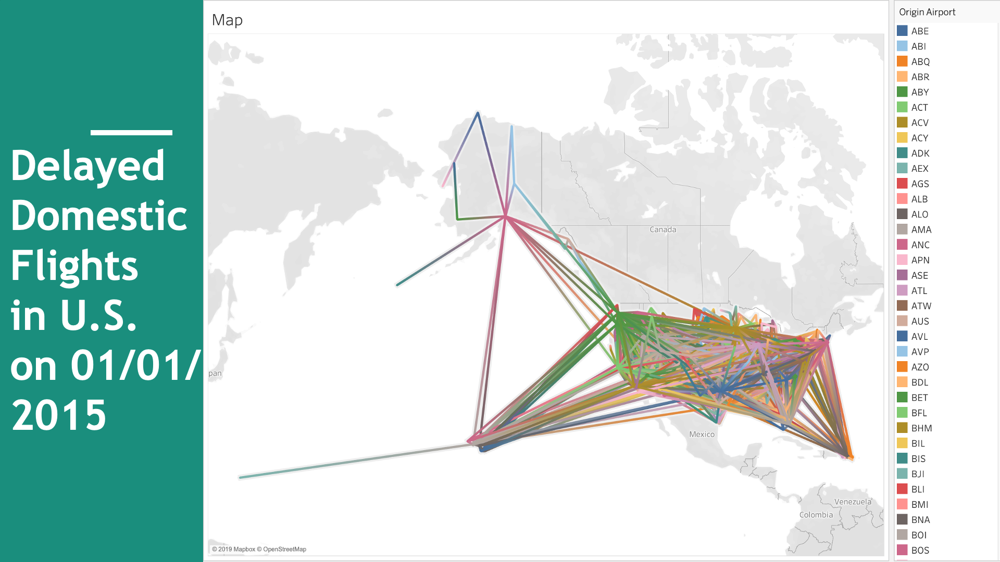

Visualization of Delayed Domestic Flights
11/2019
Code
• Analyzed and manipulated the database containing 13k+ delayed domestic flights in
US in one day, by using SQL.
• Visualized the result of the data analysis in an interactive map illustrating
delayed flights as lines between airports by using Tableau.
• Showcased the distribution and the scale of delayed flights in US, each flight’s
information and insights on mapping out delayed flights, for travelers’ reference
.
The application showcases the domestic flights in the United States on 1 January
2015. The data demonstrates each airports’ longitude, latitude, and the distance
between origin and destination airports. The lines change colors from the origin
airports to its destination airports. From the visualization,
we can observe that the flights in the contiguous 48 states are more frequent than
the outlying states and territories. For the 48 states, the major hubs like DFW
, JFK, and LAX have huge amounts of flights going in and out. For the outlying
states and territories, the flights to and from Hawaii and Puerto Rico are more
frequent than to and from Alaska and Guam, probably because of their famous
tourism.
